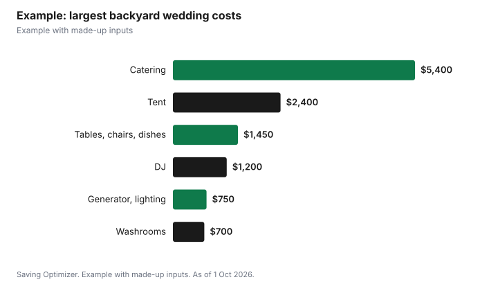

Weddings · Canada
Backyard Weddings in Canada: Tent Permits, Noise Limits, Alcohol Rules, Insurance and Hidden Costs

A backyard wedding saves the venue fee, but you take on the venue's jobs: renting a tent, tables, chairs and dishes, supplying washrooms and power, managing noise and alcohol, and carrying the liability. In Ontario, the AGCO says you do not need a special occasion permit to serve alcohol to invited guests in your own home, but liquor cannot be sold at a residence, so a cash bar is out. In Toronto, amplified music heard in a neighbour's outdoor living area may not exceed 55 dB(A) between 7 a.m. and 11 p.m. or 50 dB(A) after 11 p.m., unless you have a noise exemption permit, and tents can need a building permit, with fees starting at $1.55 per square metre for non-certified tents as of 2026.
Key takeaways
- You supply everything a venue normally does.
- Ontario: no permit to serve invited guests at home; no sales at a residence.
- Toronto: amplified sound limits of 55 dB(A) by day and 50 dB(A) after 11 p.m. in outdoor living areas.
- Toronto tents can need a building permit; ask Toronto Building.
- Ask your home insurer about liability and rented property.
- Example with made-up inputs: a 60-guest backyard budget.
Tent and rental costs
| Item | What to ask |
|---|---|
| Tent | Size for guests, tables and dance floor; sides for weather; delivery, setup and teardown; anchoring method |
| Tables and chairs | Count, style, delivery |
| Linens, dishes, glassware, cutlery | Return dirty or clean; breakage fees |
| Lighting | String lights, power needs |
| Dance floor | Size and level ground |
| Heaters or fans | Fuel or power |
| Damage waiver | Cost and what it covers |
Ask the rental company for a site visit. Lawns, slopes, trees, septic systems, underground lines and access for delivery trucks all affect what fits and how the tent is anchored. Call your provincial utility locate service before anything is staked into the ground. Book rentals early for peak summer weekends, and confirm delivery and pickup windows so the yard is clear the next day.
Tent permits in Toronto
Toronto Building issues permits for the temporary construction of structures such as tents, and requires drawings or certified tent details, a site plan with setbacks, and an application form. Fees effective 1 January 2026 are $1.55 per square metre for the first 225 m2 plus $0.40 for each additional m2 for non-certified tents, or $214.79 per certified tent. Ask your rental company whether their tents are certified and whether they handle the permit, and confirm with Toronto Building whether your tent size and location need one. Other municipalities set their own rules.
Washrooms and power
- Household washrooms may not cope with a large guest list over several hours; portable washroom trailers or units are an option. Ask about delivery, servicing and placement.
- Power: caterers, DJs, lighting and heaters can overload household circuits. A rental generator or an electrician's assessment avoids tripped breakers mid-speech.
- Kitchen: caterers may need a prep area, water and a place for hot boxes or a mobile kitchen.
- Parking: plan where guests park and whether a shuttle is needed. Check local street parking rules.
Permits and noise bylaws
Toronto's noise bylaw limits amplified sound and musical instruments, measured as a 10-minute average, when heard in an outdoor living area: 55 dB(A) or 70 dB(C) from 7 a.m. to 11 p.m., and 50 dB(A) or 65 dB(C) from 11 p.m. to 7 a.m. Indoor living area limits are lower. The City offers noise exemption permits for specific events if application requirements are met, and holders must follow the permit conditions. Tell neighbours in advance, give them a contact number, and plan to turn music down or move it indoors by 11 p.m. Other municipalities have their own bylaws.
Alcohol rules
The AGCO says you do not need a special occasion permit to serve alcohol to invited guests in your own home, and that liquor cannot be sold at a residence, so you cannot run a cash bar, sell drink tickets or charge admission that covers alcohol. helloLCBO's permit FAQ says homemade wine or beer may be served, but not sold, at a wedding if made by a family member and given free. If your event moves to a rented site or charges for alcohol, a permit may be needed; see buying your own wedding alcohol. You are responsible for guests' safety: hire bartenders, serve food, offer non-alcoholic drinks and arrange rides home.
Insurance
Ask your home insurer in writing whether your policy covers liability for guests at a wedding at your home, whether host liquor liability is included, and whether rented items such as the tent are covered. Some rental companies require proof of insurance or a damage waiver. Special event liability policies are another option; one published Canadian wedding policy includes cover for rented property such as tents, tables, chairs and audio equipment, though it excludes cancellation after damage to tents. See wedding insurance.
Checklist
- Measure the yard and get a rental site visit.
- Confirm tent permit needs with your municipality.
- Book washrooms, power and lighting.
- Plan parking and accessible paths.
- Check the noise bylaw; tell neighbours; consider an exemption permit.
- Confirm alcohol rules; no sales at a residence in Ontario.
- Get insurance answers in writing.
- Plan a weather backup: tent sides, heaters, an indoor option.
- Arrange garbage, recycling and cleanup.
Example with made-up inputs
These numbers are an example with made-up inputs, apart from Toronto's tent permit fee. A Toronto couple hosts 60 guests at home. A 12 m by 9 m tent (108 m2) costs a made-up $2,400 with setup; if non-certified, the permit fee at $1.55 per m2 is $167.40. Tables, chairs, linens and dishes cost $1,450, two portable washroom units $700, a generator $450, lighting $300, catering $5,400, two bartenders $560, a DJ $1,200, a home insurance rider $150 and cleanup $250. Total: $13,027.40, before alcohol and HST.
| Item | Cost |
|---|---|
| Tent (108 m2) with setup | $2,400.00 |
| Tent permit (non-certified, $1.55/m2) | $167.40 |
| Tables, chairs, linens, dishes | $1,450.00 |
| Portable washrooms | $700.00 |
| Generator and lighting | $750.00 |
| Catering | $5,400.00 |
| Bartenders | $560.00 |
| DJ | $1,200.00 |
| Insurance rider and cleanup | $400.00 |
| Total | $13,027.40 |

Common mistakes
- Assuming a backyard means no costs.
- Running a cash bar at a residence.
- Ignoring the 11 p.m. noise change.
- Overloading household power.
- Not asking the home insurer before the event.
Related: wedding venue types and DJ vs live band.
Sources
- Alcohol and Gaming Commission of Ontario, Special occasion permits: do I need a permit; private events, agco.ca, as of 1 Oct 2026.
- LCBO, helloLCBO special occasion permit FAQs, as of 1 Oct 2026.
- City of Toronto, Noise bylaw: amplified and musical instrument sounds; noise exemption permits, toronto.ca, as of 1 Oct 2026.
- City of Toronto, Tents and temporary structures: building permit fees effective 1 Jan 2026, toronto.ca, as of 1 Oct 2026.
- P.A.L. Insurance Brokers Canada, Weddinguard Wording, updated 1 Jun 2024, as of 1 Oct 2026.
- Rental, catering, staffing and insurance amounts in the example are made-up inputs.
Frequently asked questions
Do I need a permit to serve alcohol at a backyard wedding in Ontario?
The AGCO says you do not need a special occasion permit to serve alcohol to invited guests in your own home. Liquor cannot be sold at a residence.
Can I have a cash bar at a home wedding in Ontario?
No. The AGCO says liquor cannot be sold at a residence.
What are Toronto's noise limits for backyard music?
Amplified sound heard in an outdoor living area may not exceed 55 dB(A) from 7 a.m. to 11 p.m., or 50 dB(A) from 11 p.m. to 7 a.m.
Do I need a permit for a wedding tent in Toronto?
Toronto Building issues permits for tents; fees start at $1.55 per square metre for non-certified tents. Confirm whether yours needs one.
Can I get a noise exemption for a wedding?
Toronto offers noise exemption permits for specific events if application requirements are met.
Does home insurance cover a backyard wedding?
Ask your insurer in writing about liability, host liquor liability and rented items.
Researched and drafted with AI assistance and fact-checked against official Canadian sources. How we create content.
Disclosure: Saving Optimizer may earn a commission if a partner link is added later. No partnership is claimed on this page. Education only.